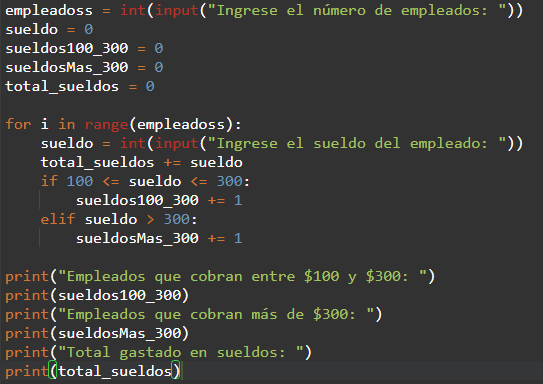
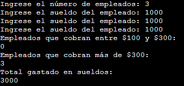
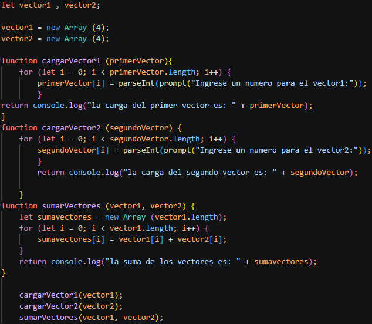

Sobre mí
Mi nombre es Benjamin Chaile, nací el 2 de octubre de 2009 y actualmente soy estudiante de la
Escuela Técnica N.° 26 "Confederación Suiza"
,
institución en la que me estoy formando en el área de desarrollo de software y tecnologías informáticas. Mi formación académica está orientada al aprendizaje de herramientas y lenguajes de programación modernos, así como al desarrollo de soluciones tecnológicas aplicadas tanto al ámbito educativo como a proyectos personales. Durante mi trayectoria escolar he sido instruido por el docente Lucas Manuel Astrono Rey, quien ha acompañado y guiado mi proceso de aprendizaje en programación y desarrollo de software. Gracias a esta formación, he adquirido conocimientos sólidos en distintos herramientas y lenguajes de programación, destacándome principalmente en Python y JavaScript, lenguajes con los que he desarrollado ejercicios, aplicaciones y proyectos orientados a la lógica de programación, automatización de tareas y desarrollo interactivo. Además, cuento con experiencia en diseño y marcado de páginas web utilizando HTML y CSS, herramientas fundamentales para la creación de sitios web modernos, estructurados y visualmente atractivos. A través de estos conocimientos he trabajado en la elaboración de páginas web académicas y proyectos personales, aplicando conceptos de maquetación, estilos, diseño responsivo y organización de contenido. Mis conocimientos técnicos han sido aplicados en diversos trabajos académicos y proyectos personales, lo que me ha permitido fortalecer habilidades como el análisis de problemas, el trabajo en equipo, la creatividad y la capacidad de desarrollar soluciones funcionales mediante programación. Entre los proyectos realizados se incluyen páginas web informativas, ejercicios de automatización en Python, programas de lógica y estructuras de control, y prototipos de aplicaciones orientadas al aprendizaje y la práctica técnica.
Proyecciones a futuro
Mis proyecciones a futuro están orientadas al crecimiento continuo dentro del ámbito tecnológico, buscando perfeccionar mis habilidades como desarrollador y ampliar mis conocimientos en nuevas áreas de la informática. Aspiro a participar en proyectos cada vez más desafiantes que me permitan adquirir experiencia práctica y desarrollar soluciones innovadoras mediante el uso de la programación. Entre mis objetivos se encuentra profundizar mis conocimientos en desarrollo web, desarrollo de software, bases de datos y tecnologías emergentes, con la intención de crear aplicaciones útiles, eficientes y de impacto real. Asimismo, busco mantener una formación constante que me permita adaptarme a los avances del sector tecnológico y enfrentar nuevos desafíos profesionales.
Escuela Técnica N.° 26 "Confederación Suiza"
La Escuela Técnica N.º 26 "Confederación Suiza" es una institución educativa pública de la Ciudad Autónoma de Buenos Aires dedicada a la formación de técnicos altamente capacitados. Ubicada en la Avenida Jujuy 255, en el barrio de Balvanera, cuenta con una extensa trayectoria de más de setenta y cinco años formando profesionales preparados para enfrentar los desafíos tecnológicos y laborales de la actualidad.
La escuela ofrece dos especialidades: Automotores y Computación. La orientación en Automotores brinda conocimientos sobre mecánica, diagnóstico, mantenimiento y reparación de vehículos, combinando clases teóricas con una importante formación práctica en talleres especializados. Por su parte, la especialidad de Computación permite a los estudiantes desarrollar competencias en programación, redes, sistemas informáticos y nuevas tecnologías, contando con laboratorios equipados e incluso impresoras 3D para la realización de proyectos tecnológicos.
La historia de la institución se remonta al 16 de abril de 1948, cuando fue fundada como Escuela Técnica de Oficios de la Capital Federal. Ese mismo año pasó a denominarse Escuela Industrial N.º 11 y, en 1949, recibió a sus primeros alumnos en la entonces única especialidad de Automotores. En 1966 fue reorganizada por el Consejo Nacional de Educación Técnica (CONET) y adoptó el nombre de ENET N.º 26 «Automotores». Posteriormente, en 1972, se trasladó a su edificio actual. Gracias a una donación realizada por el gobierno suizo para adecuar las instalaciones, la escuela recibió el nombre de «Confederación Suiza», que conserva hasta la actualidad. En 1992 se incorporó la especialidad de Computación, ampliando su oferta educativa y consolidándose como una de las escuelas técnicas de referencia de la ciudad.
Lenguajes de programación
Python
Uno de mis proyectos en Python es este programa para organizar los sueldos de empleados en una empresa. Sirve como ejemplo para cargar una cantidad de empleados, ingresar sus sueldos, clasificarlos segun el monto y calcular el total gastado.
Codigo fuente

En este programa de Python se ingresa la cantidad de empleados y luego el sueldo de cada uno para clasificarlos. El codigo utiliza variables para guardar los contadores y el total gastado en sueldos. Tambien usa un bucle for para repetir la carga de datos segun la cantidad de empleados ingresada, y comparaciones con if y elif para separar los sueldos entre los que estan entre $100 y $300, y los que son mayores a $300. Al final, muestra por pantalla la cantidad de empleados de cada grupo y el total de dinero gastado.
Resultado

En la parte del resultado se puede ver como funciona el programa: primero se ingresa la cantidad de empleados y despues el sueldo de cada uno. Como en el ejemplo los tres sueldos son mayores a $300, el programa muestra 0 empleados en el rango de $100 a $300, 3 empleados con sueldo mayor a $300 y un total gastado de 3000.
JavaScript
JavaScript es un lenguaje de programación creado en 1995 por Brendan Eich con el objetivo de agregar interactividad a las páginas web. Actualmente es uno de los lenguajes más utilizados en el desarrollo web, ya que permite crear sitios dinámicos, animaciones, formularios interactivos y aplicaciones complejas que se ejecutan tanto en navegadores como en servidores. JavaScript trabaja junto con HTML y CSS para construir experiencias web modernas y es compatible con numerosos frameworks y bibliotecas, lo que lo convierte en una herramienta fundamental para el desarrollo de aplicaciones web y móviles.
Codigo fuente

Uno de mis proyectos en JavaScript es este programa para trabajar con vectores. El codigo crea dos listas de numeros, carga sus valores mediante funciones y usa bucles for para recorrer cada posicion. Despues, otra funcion suma los valores de ambos vectores en la misma posicion y guarda el resultado en una nueva lista. Este ejercicio sirve para practicar arreglos, funciones, recorridos y operaciones con datos.
Resultado

En el resultado se puede ver que el primer vector contiene los numeros 1, 2, 3 y 4, mientras que el segundo contiene 5, 6, 7 y 8. Luego el programa suma cada posicion: 1 + 5, 2 + 6, 3 + 7 y 4 + 8. Por eso la lista final muestra 6, 8, 10 y 12.
Proyectos
A lo largo de mi formación como estudiante técnico, he desarrollado diversos proyectos y ejercicios en Python y JavaScript, los cuales se encuentran publicados en mi repositorio personal de GitHub. Estos trabajos abarcan la implementación de algoritmos, el diseño de funciones, el manejo de estructuras condicionales y repetitivas, así como la resolución de problemas matemáticos y de lógica. Cada proyecto representa una oportunidad para fortalecer mis habilidades de programación, mejorar la organización del código y aplicar buenas prácticas de desarrollo. Mi repositorio refleja mi progreso constante en el aprendizaje de estas tecnologías y mi interés por seguir ampliando mis conocimientos en el ámbito del desarrollo de software.